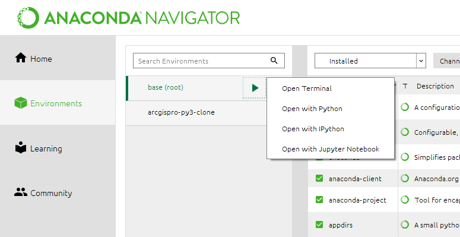

Additional Topics
This page covers miscellaneous topics.
Installing and Updating Packages
You may never need to install a package because the Anaconda Distribution comes with so many packages already installed.
But here are the instructions in case you do need to install something, or in the more likely case, you need to update something.
Step 1. Open Anaconda Navigator from your list of programs (the same place as Spyder). Step 2. Go to Environments. You will see at least one environement listed called base(root). Step 3. (Optionally) Clone the base environment so that you can keep base in its original state. For the next step use the environment where you want the package installed. Step 4. Click on the triangle next to the environment where you want to install the package and click Open Terminal. (Note the image shows opening a terminal for base, but you should open it for the environment you want).
Step 5. Enter conda install and the package name, such as conda install tensorflow or conda update tensorflow to update.
Step 6. If you created a new environment, then you need to switch the interpreter that Spyder uses. Go to Tools/Preferences/Python interpreter and click “Use the following Python interpreter”. Browse to the environment from Step 3. Now restart (x out) the Console interpreter kernel.